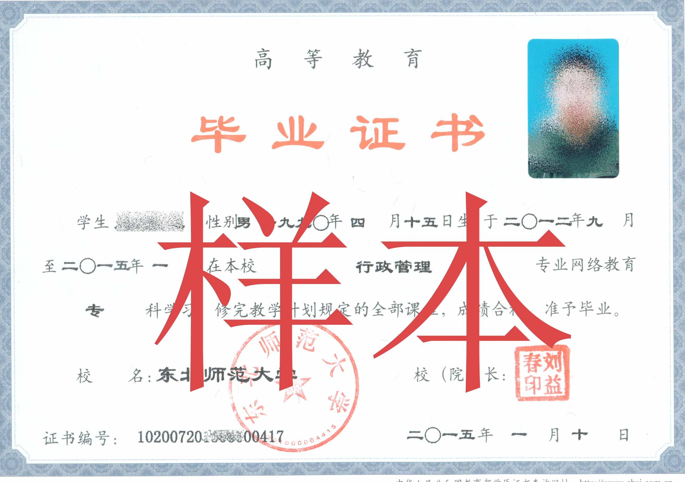
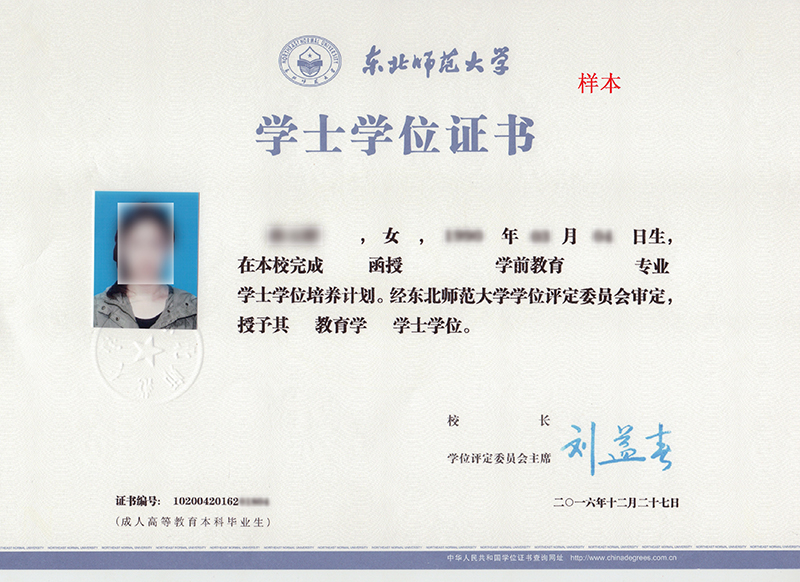

2019年网络学历教育东北师范大学招生简章
校训“勤奋创新 为人师表”
特色专业：
学前教育/ 推荐指数 ★★★★★
小学教育/ 推荐指数 ★★★★★
会计学/ 推荐指数 ★★★★★
公共事业管理/ 推荐指数 ★★★★★
行政管理/ 推荐指数 ★★★★★
院校介绍
东北师范大学建于1946年，是教育部直属高校，国家“211工程”重点建设大学。学校设有23个学院（部），78个本科专业，34个硕士学位授权一级学科，17个硕士专业学位授权点，22个博士学位授权一级学科，1个博士专业学位授权点，并有5个国家重点学科、6个学科入选“双一流”建设学科，学科点覆盖11个学科门类。学校现有全日制在校学生25,000余人，专任教师1,631人。七十余载春华秋实，学校以教育教学为立校之本，以科学研究为强校之本，已经形成了“为基础教育服务”的鲜明办学特色，被誉为“人民教师的摇篮”。学校坚持践行“尊重的教育、创造的教育”理念，坚持立德树人，致力教育创新，发展办学特色，提升教育质量，努力推进世界一流师范大学建设进程。
东北师范大学的继续教育事业始于1953年，发端于我国无产阶级革命家、教育家成仿吾亲手开创的中国高师函授教育。历经60余年的探索与沉淀，继续教育的办学主体——现代远程教育，已实现了对除音乐教育外基础教育所需专业的完全覆盖。学校立足于教师教育特色，围绕“培养学用结合、学以致用、具有就业竞争力和职业发展力的实用型人才”的培养目标，积极推进教育教学改革，大力加强课程资源建设，逐步完善了模块化的网络教育课程体系和培养方案，探索形成了符合成人教育特点的教学管理模式，更以高效便捷和规范有序的教学支持服务得到了业内的广泛赞誉。截止到2017年底，现代远程教育的在籍学生人数已经超过12万人，共培养了数以十万计的基础教育优秀师资和各级各类的专门人才。
当前，东北师范大学的现代远程教育已迈上了内涵式发展新征程，进入了办学质量和管理水平的提升期。正在以满足新时代继续教育学习者的个性化学习需求为目标，全力构建具有时代特点、东师特色和成人教育特征的现代远程教育新模式，努力打造“办学精雕、管理精细、规模精小”的优质品牌，为我国加快建设终身学习型社会源源不断地注入新的活力。
舟炬教育介绍
舟炬远程教育中心（简称舟炬教育），是教育部批准成立的远程教育内容服务运营机构。
基于互联网平台，以灵活、方便、个性化的技术手段，为不同年龄、不同职业的人们提供数字化学习机会和全天候一站式学习支持服务；
与北京大学、中国人民大学等国内60多所著名高校开展远程学历教育合作，在全国建立1800多家舟炬远程教育学习中心，为各类学习者提供不同层次和专业的学历教育服务；
与人力资源和社会保障部、共青团中央、国际权威培训机构，国内多所高等院校建立合作，共同推进中国职业教育的发展；
2010年入选教育部“国培计划”教师远程培训机构推荐名单，开始全面进军中小学教师继续教育和培训领域；
200多万名学员，人人都有机会“比别人更快成功”！
我们努力奉献，旨在让更多的求学者拥有朴实、自然、轻松的生活方式；我们孜孜以求，用全部的热忱和执著，和您一起绽放生命脉搏中喷薄的向上力量。
招生专业
层次 | 招生专业 | 科类 | 考试科目 | 学位类型 | 学分 | 学习期限 |
高起专 | 学前教育 | 文科 | 基础知识测试（语文、数学、英语） | 专科层次 无学位 | 80 | 2.5--6年 |
小学教育 | ||||||
心理健康教育 | ||||||
美术教育 | ||||||
汉语 | ||||||
应用英语 | ||||||
会计 | 文理科 | |||||
法律事务 | ||||||
计算机应用技术 | ||||||
专升本 | 公共事业管理 | 文科 | 基础知识测试（语文、英语）专业知识测试（教育心理学试卷） | 管理学 | ||
小学教育 | 教育学 | |||||
学前教育 | ||||||
思想政治教育 | 法学 | |||||
汉语言文学 | 文学 | |||||
历史学 | 历史学 | |||||
英语 | 文学 | |||||
美术学 | ||||||
数学与应用数学 | 理科 | 基础知识测试（数学、英语）专业知识测试（教育心理学试卷） | 理学 | |||
物理学 | ||||||
化学 | ||||||
心理学 | ||||||
地理科学 | ||||||
体育教育 | 教育学 | |||||
法学 | 文理科 | 基础知识测试（语文、英语）专业知识测试（专业课） | 法学 | |||
计算机科学与技术 | 理学 | |||||
会计学 | 管理学 | |||||
行政管理 | ||||||
高起本 | 学前教育 | 文科 | 基础知识测试（语文、数学、英语） | 教育学 | 150 | 5-7年 |
汉语言文学 | 文学 | |||||
英语 | ||||||
数学与应用数学 | 理科 | 理学 | ||||
计算机科学与技术 | 文理科 | |||||
法学 | 法学 | |||||
会计学 | 管理学 | |||||
行政管理 |
注：1）最短学习期限，从教育部学籍正式注册时间开始算起（通常春季为3月1日；秋季为9月1日），不含毕业发证时间。最短修业时间为2.5年；若延迟毕业最长修业时间不得超过5年
2）以上专业名称如遇教育部政策调整，以教育部最新规定为准。
招生对象
报考专升本科须具有国民教育系列大学专科及以上毕业文凭
报考高中起点本、专科须具有高中或中专等学历文凭
各类在职教师、教育管理人员，国家公务员，从事企事业工作及其他社会人员
春季注册学生，其前置证书取得时间不得晚于当年2月28日
秋季注册学生，其前置证书取得时间不得晚于当年8月31日
报名办法
全年组织报名，春秋两季注册
春季注册为3月，秋季注册为9月
招生报名开始时间：2018年11月5日、春季课程开始学习时间：2018年12月、秋季课程开始学习时间：2019年6月
报名地点: 东北师范大学继续教育学院授权本次招生的各地舟炬远程教育学习中心（具体查询舟炬教育网站： http://www.open.com.cn————【服务大厅】——【权威查询】——【高校授权查询】——【东北师范大学】
报名须知：报名者（含申请免试入学）须持本人二代身份证、毕业证书原件及复印件各2份，2寸照片（免冠、正面、彩色、蓝底、同版）3张，到当地舟炬远程教育学习中心报名。学习中心按照规定的学历条件逐一审查合格后，学生填写《学生报名登记表》。
报名费：50元
入学测试费：70元（免试者免交）
入学方式
免试入学及条件：
(1)已获国民教育系列本科及以上毕业证书，报考专科起点本科专业时，可申请免试入学（研究生进修班结业者不可免试）
(2)参加最近一次全国成人高考，成绩达到当地相同专业、层次规定的录取分数线时，可申请免试入学（需提供相应毕业证书、准考证及成人高考成绩单）
测试入学：凡不符合上述免试入学条件的报名者，均须报名参加由东北师范大学统一组织的入学测试
入学测试
考试方式：机考（请联系当地舟炬远程教育学习中心）
2019年春季入学测试截止时间：2019年2月28日、2019年秋季入学测试截止时间：2019年8月30日
考试地点: 东北师范大学继续教育学院授权本次招生的舟炬远程教育学习中心
入学测试：模拟试题可登录舟炬教育网站（http://www.open.com.cn——【服务大厅】——【常用下载】——【入学测试模拟题下载】——【东北师范大学】
入学资格审核
按教育部规定，招收网络教育专科起点本科的学生，必须按照规定的相应学历条件报名入学（含免试入学）。严禁未获得专科毕业证书者取得专科起点本科入学资格。所有报名入学者必须提供真实、有效的证件接受审核与办理注册。若学员所提供的毕业证书无法在中国高等教育学生信息网（www.chsi.com.cn）上得到确认，学员须出具全国高等学校学生信息咨询与就业指导中心所提供的合格验证报告，方可具备入学资格。凡持不符合条件的毕业证书（如伪造证书、非国民教育系列证书、地方颁发只在地方承认的证书、未按教育部规定进行电子注册的高等教育毕业证书等）报名者，一经审核查出，即做取消学籍、追回在学证件处理，由此造成的费用损失等责任，均由学生本人负责
录取 交费 选课 注册
录取：凡符合报名条件并且经入学测试者，由东北师范大学继续教育学院择优录取，在网上公布录取名单，通过学生报名学习中心打印《录取通知书》。新生凭录取通知书、准考证、毕业证与身份证，按规定时间到舟炬远程教育学习中心报到和办理入学手续
新生交费：新生第一学期必须交纳不低于30学分的学费，第二学期交纳20学分学费，第三学期交纳余额部分。
选课：新生入学，由舟炬远程教育学习中心按照学校开课计划为学生进行集体选课
注册：通过测试录取和批准免试入学新生，在交纳首期学费后，由东北师范大学继续教育学院根据学生入学时间于3月、9月对其进行学籍注册
教学及学习
教学模式：课件学习+网上导学+网上答疑讨论+课程作业+学习中心导学辅导+集中考试+毕业论文
平时成绩占总评成绩比重：约占40%（特殊课程除外）
采用完全学分制，弹性学习期限。学生可自主地掌握学习时间和学习地点
免修条件及办理：按东北师范大学继续教育学院有关规定办理相应课程的免修
统考
统考是指教育部对现代远程教育试点高校网络教育部分公共基础课实施的全国统一考试。考试对象为现代远程教育试点普通高校的本科层次网络学历教育的学生。
统考科目按不同学历起点和不同专业类别确定：
（1）高中起点本科学生的统考科目如下：
专业类别 | 统 考 科 目 |
理工类 | 大学英语(B)、计算机应用基础、高等数学(B)(数学专业考“高等数学(A)”) |
文史法医 教育类 | 大学英语(B)、计算机应用基础、大学语文(B)(文史类专业考“大学语文(A)”) |
英语类 | 大学英语(A)、计算机应用基础、大学语文(B) |
艺术类 | 大学英语(C)、计算机应用基础、大学语文(B) |
其它专业 | 大学英语(B)、计算机应用基础，“高等数学(B)”和“大学语文(B)”由试点学校任选一门 |
（2）专科起点本科学生的统考科目如下：
专业类别 | 统考科目 | 备 注 |
英语类 | 大学英语(A)、计算机应用基础 | 专科起点本科教育入学考试(自主考试或成人高考)科目中没有“大学语文”或“高等数学”成绩的，按不同专业须加试统考科目“大学语文(B)”或“高等数学(B)”, 加试科目的选择同高中起点本科学生的专业分类。 |
艺术类 | 大学英语(C)、计算机应用基础 | |
其它专业 | 大学英语(B)、计算机应用基础 |
相关政策详见中国现代远程与继续教育网：http://www.cdce.cn
毕业证书、学位证书
学生在规定学习期限内修完本专业教学计划规定的全部课程，完成实践教学等环节和通过毕业论文（设计），成绩合格，达到规定的最低毕业学分，通过教育部统一组织的公共课程考试，准予毕业（专科毕业不作毕业论文、不参加教育部公共课程统考）。由东北师范大学颁发国民教育系列本科或专科（网络教育）毕业证书，并报教育部电子注册，国家承认学历
要求通过参加吉林省组织的学位英语考试或13个可借考省份（自治区）的学位英语考试，符合学士学位条件的本科毕业生，按照《中华人民共和国学位条例规定》及《东北师范大学授予成人高等教育本科毕业生学士学位实施细则》的规定，由东北师范大学授予相应学科门类的学士学位
证书签章单位：东北师范大学（毕业证书、学位证书式样以学生毕业时教育部当年最新规定政策为准）
重点专业课程设置
层次 | 专业名称 | 主干课程 |
专 升 本 | 汉语言文学 | 文学理论研究、中国现当代文学史、语文学科教学论、古代汉语（1）、古代汉语（2）、中国古代文学史（1）、中国古代文学史（2）、外国文学史等 |
教育管理 | 教育评价学、教育经济学、教育统计与测量、教育法学、教育政策学、基础教育管理、教育督导、学校管理、教育学、心理学、教师专题讲座 | |
英语 | 大学日语（二）、高级英语、英语语言学、报刊选读、高级听力、英语教学法、高级英语写作、英美文学、英汉翻译等 | |
小学教育 | 课程与教学论、中外教育史、教育心理学、小学数学教学论、小学语文教学论、小学生心理咨询、小学教育研究方法、小学教学技能等 | |
学前教育 | 学前教育学、中外学前教育史、幼儿园课程论、学前儿童心理学、比较学前教育学、学前教育评价、幼儿学习心理学、学前教育研究方法等 | |
数学与应用数学 | 高观点下中学数学－分析学、高观点下中学数学－代数学、高观点下中学数学－几何学、概率论与数理统计、数学教育学、组合数学、计算方法、数学建模课程等 | |
计算机科学与技术 | 离散数学、操作系统、微型机原理与应用、数据库系统、编译原理、计算机系统结构、计算机网络、Java程序设计、软件工程等 | |
法学 | 国际经济法、宪法学、刑法学、民法、国际私法、合同法、劳动法、外国法制史、房地产法等 | |
高起专 | 小学教育 | 初等教育改革与发展、课程与教学概论、中外教育简史、德育原理、小学生心理健康教育、现代教育技术、小学教学心理学、小学数学教学法、小学语文教学法、小学课堂管理等 |
学前教育 | 学前儿童卫生学、幼儿心理学、学前教育原理、学前儿童家庭教育、幼儿园健康教育活动及设计、幼儿园语言教育活动及设计、当代外国学前教育、幼儿园科学教育活动及设计、幼儿园社会教育活动及设计、幼儿园艺术教育活动及设计等 | |
高 起 本 | 汉语言文学 | 教育学、心理学、写作、现代汉语（一、二）、中国现当代文学史（一、二、三）、古代汉语（一、二、三、四）、中国古代文学史（一、二、三、四）、文学概论、语文学科教学论、语言学概论等 |
注：以上各专业的课程设置，随着学科建设和课程发展会有所调整，请报考考生以教学计划为准。
附件：毕业证书和学位证书参考样本


联系我们
舟炬教育服务热线：400-810-6736
舟炬教育报名热线：400-813-1121
舟炬教育网址：www.open.com.cn
本招生简章在执行过程中，如遇国家教育部新出台政策，按教育部的新政策执行。